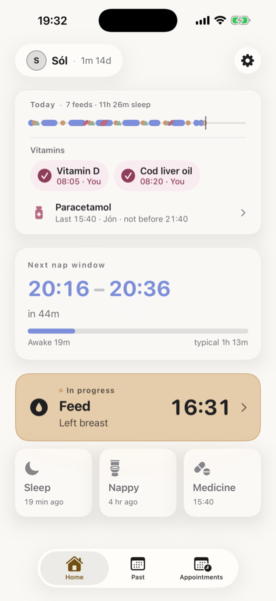
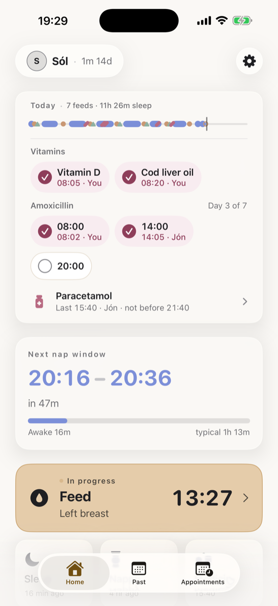
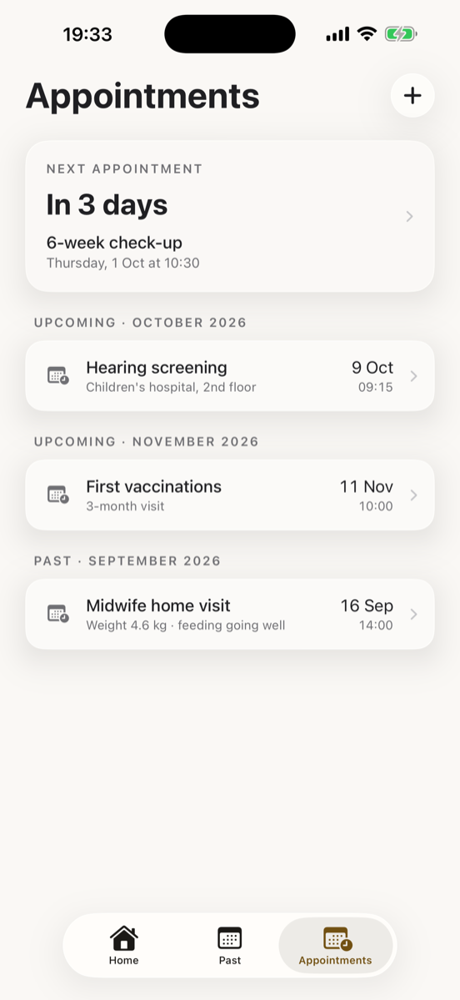
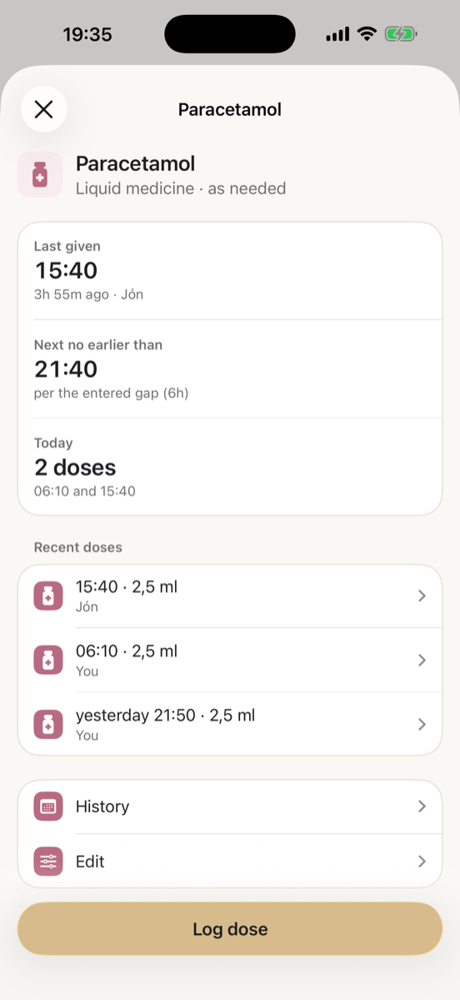

Sleep, feeding and diapers — all in one place, for both parents.
Log your baby's day in one tap and share it with the other parent in real time — no more texting "when did he last sleep?"

Built for sleepless nights
No more sticky notes or back-and-forth texts — just a clear picture of the day, together.
Log in one tap
Sleep, feeding and diaper changes — each with its own color and reminder, logged with a single tap. Nothing fiddly, nothing to set up.
Medicine and vitamins
Tick off vitamin D and fish oil and see who gave it, and when. Log medicine, including as-needed doses, with courses and reminders — and include it in the report for your doctor. The app only records what you enter; it never calculates doses.
Both parents, same picture
You both see the same log in real time, whether you're home or out — nobody has to ask what the other one did.
Remembers which side
Barnið automatically remembers which side you breastfed on last, so you don't have to try to recall it at 3am.
Finds the sweet spot
Barnið learns your baby's sleep pattern and suggests the best time for the next nap, before overtiredness sets in.
Lock Screen sleep timer
Track sleep time right from the Lock Screen or Dynamic Island — no need to open the app to see how it's going.
Here's what it looks like
Simple, warm and fast to use — one-handed, half asleep.



Frequently asked questions
Answers to what parents ask most about Barnið.
What is Barnið?
Barnið is an Icelandic-first iPhone app that helps parents log a baby's sleep, breastfeeding and bottle feeds, diaper changes, medicine, vitamins and appointments, and share the log with the other parent in real time.
Is Barnið free?
Barnið is free to download from the App Store and to log your baby's daily routines. Barnið Premium is an optional subscription with a free trial that adds appointments, Sleep Time predictions, extra guardians and babies, and medicine reminders.
Can both parents use Barnið together?
Yes. You invite the other parent with an invite code, and you both see the same log for the same baby in real time, even when one of you is away from home. A third guardian requires Premium.
Does Barnið work offline?
Yes. Entries are saved on your phone when there is no connection, and they sync with the other parent when your phone is back online.
Where is the data stored, and is it private?
Data is stored on servers in Ireland (inside the EEA) and on the phones of everyone who shares the baby. It is never sold and the app has no ads. You can delete your account and data at any time in Settings. See the privacy policy for details.
Can I track medicine and vitamins for a baby?
Yes. You can tick off vitamin D and fish oil each day and see who gave it and when, and log medicine, including as-needed doses and courses. The app only records what you enter and never calculates doses.
What is Sleep Time in Barnið?
Sleep Time is a prediction Barnið calculates from your baby's own sleep pattern, suggesting the best time for the next nap before the baby gets overtired. It is part of Barnið Premium and is guidance, not medical advice.
What can I log with Barnið?
Sleep, breastfeeding (the app remembers which side you used last), bottle feeds, pumping, diaper changes, medicine, vitamins and appointments such as well-baby checkups. You can also follow a sleep timer on the Lock Screen and in the Dynamic Island.
Is Barnið available for Android?
Not yet. Barnið is currently available only for iPhone on the App Store. An Android version is in development.
Barnið is on the App Store
Free to download. Grab the app and start logging in seconds.